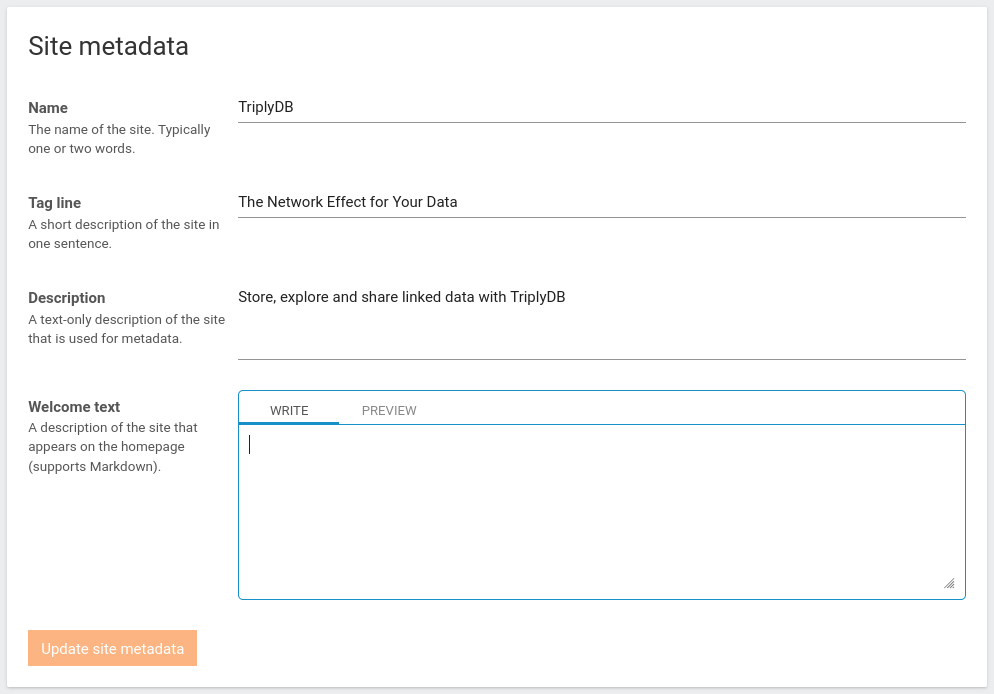

Admin settings Pages¶
You can use the console to perform administrator tasks. The administrator tasks are performed within the admin settings page. The admin settings pages are accessible by clicking on the user menu in the top-right corner and selecting the “Admin settings” menu item. You must have administrator privileges to access these pages and perform administrator tasks.
Overview page¶
The first page that comes into view when opening the admin settings pages is the overview page. This page contains an overview of all the important statistics of the instance. The page also shows how close the instance is to hitting one or more limits.
If no limit is set, the statistics are shown as a counter. If a limit is set a gauge is shown with a green, orange or red bar. The colors denote how far that statistic of the instance is to the limit. Green means not close to the limit, Orange means close to the limit, Red means over the limit.
General overview¶
The general overview gives an insight into the software version of the instance. Each instance consists of a console and an API. The console is the web interface of the instance and has a build date corresponding to the build date of the docker image of the console and a version number corresponding to the version of the docker image. The API is the layer between the console and the data. The API is separate from the console and is a different docker image. The API also has a version and build date of the docker image. Also contains a starting time, and an updated time, the moments when the docker image is started for this instance or when the docker image is updated for the instance.
Accounts overview¶
The accounts overview shows how many organizations and users are in this instance. The organizations and users are shown in a counter if no limit is set. If a limit is set on the number of organizations and/or users of the instance a gauge is shown.
Data overview¶
The data overview shows multiple statistics about datasets. The first counter shows the amount of datasets on the instance. The second and third counters show the amount of graphs and statements in all graphs. The fourth and fifth counters show the amount of unique graphs and statements. When a graph is copied from one dataset to another, the data in that graph does not change. The amount of unique data does not change either. The amount of unique data is a more representative way of calculating the amount of data in the instance. All statistics are shown in a counter, if no limit is set. If a limit is set on one of the statistics of the instance a gauge is shown.
Services overview¶
The data overview shows how multiple statistics about services. The first counter shows the total amount of services on the instance, The second counter shows the total amount of statements in all the services. Then for each of our service types a specific counter is created. Each containing the amount of services and the amount of statements in that service. All statistics are shown in a counter if no limit is set. If a limit is set on one of the statistics of the instance a gauge is shown.
Settings page¶
The settings page is the main page for administrators to institute instance wide changes. An administrator can change the site logo's here, change the contact email or update site wide prefixes.
Set logos and banner¶
For changing the logos and the banner follow the next steps:
-
Click on the “Admin settings” link in the user menu (top-right corner) and click the "Settings" tab. This brings up an overview of all the settings an admin can set for the TriplyDB instance.
-
Under "Site logos" and "Site banner" you can upload a site logo (square and landscape) or a banner.
-
The logo (preferably squared) is required to be SVG. In the UI the 30x30px image is displayed.
-
The banner can be of any format, however, the WEBP is preferred. The image's resolution should be between 1920x500 and up to 4000x500. The banner is displayed at a height 500px. If the image is smaller than the browser screen size, the image will be stretched.
-
Make sure you use files with a maximum size of 5 MB.
-
Setting metadata¶
For changing the metadata follow the next steps: 1. Click on the “Admin settings” link in the user menu (top-right corner) and click the "Settings" tab. This brings up an overview of all the settings an admin can set for the TriplyDB instance.
- On that page navigate to "Site metadata", it looks as follows:

- Here you can set the name, tag line, description and welcome text. The name of your website appears in your browser tab. The welcome text appears on the homepage of your TriplyDB instance. The tagline and description are for metadata purposes (e.g. findability and website previews).
Setting contact email¶
For changing the contact email follow the next steps: 1. Click on the “Admin settings” link in the user menu (top-right corner) and click the "Settings" tab. This brings up an overview of all the settings an admin can set for the TriplyDB instance.
- On that page navigate to "Contact Email". Here, you can change the contact email to a new contact email for the instance.
Setting example datasets¶
Example datasets are introduction datasets on the frontpage of your instance. The Example datasets are datasets that are interesting for people that visit your page to see and interact with. Most often you'll use open datasets to show them off on the frontpage. You can also use internal or private datasets, but these will only be visible if the person seeing them has the right access rights.
For editing the example datasets follow the next steps: 1. Click on the “Admin settings” link in the user menu (top-right corner) and click the "Settings" tab. This brings up an overview of all the settings an admin can set for the TriplyDB instance.
-
On that page, navigate to "Example datasets". Here, you can execute the following changes:
-
You can move datasets up and down in the order by clicking and holding your left mouse button over the three horizontal lines in front of the dataset name. You can then drag the selected dataset to their new spot.
- In the search field below the already added datasets you can add a new example dataset by typing in the search field and selecting the correct dataset.
- You can remove datasets by pressing the
xon the right side of the dataset name to remove it from the example dataset list.
Setting Starter dataset¶
The starter dataset is a beginner-friendly linked dataset that can be an introduction into linked data when a user creates an account for the first time. The starter dataset is visible for a user when the user has not yet created a dataset on its own account.
For editing the example datasets follow the next steps: 1. Click on the “Admin settings” link in the user menu (top-right corner) and click the "Settings" tab. This brings up an overview of all the settings an admin can set for the TriplyDB instance.
- On that page navigate to "Starter dataset". Here you can change the starter dataset to a new starter dataset for the instance by typing in the search bar a name of an existing dataset to replace the started dataset. This dataset then will be presented to users on their account page, with an option to import(copy) them immediately. This needs to be a public dataset! If it's not public, new users will have to create a dataset. The starter dataset is only shown if the user currently has no datasets.
Setting Authentication¶
One of the roles of an administrator is to make sure only the right people will sign up for the TriplyDB instance. To do this, an administrator can set up authentication protocols. The authentication protocols can block people from signing up to instances where they are not allowed to sign up to.
For changing the authentication protocols follow the next steps: 1. Click on the “Admin settings” link in the user menu (top-right corner) and click the "Settings" tab. This brings up an overview of all the settings an admin can set for the TriplyDB instance.
- On that page navigate to "Authentication". Now you can change the password sign up. Allowing people to only register with a password or they are only allowed to register with a google or Github account. When password signup is enabled, the administrator can also set the permitted signup domains. Only users with e-mail addresses that match these domains are allowed to sign-up. Wildcards are allowed and domains are comma separated, for example: mydomain.com,*.mydomain.com.
Setting Site-wide prefixes¶
One of the advantages of using TriplyDB is that you can set site-wide prefixes once and use them everywhere on the instance. Site-wide prefixes are prefixes defined in the admin settings and can be used for all datasets that contain the IRIs matching the prefixes.
For editing the side-wide prefixes follow the next steps: 1. Click on the “Admin settings” link in the user menu (top-right corner) and click the "Settings" tab. This brings up an overview of all the settings an admin can set for the TriplyDB instance.
-
On that page navigate to "Site-wide prefixes". Here, you can execute the following changes:
-
Each field of the already added site-wide prefixes you can edit. You can edit the prefix label by typing in the first field. You can edit the prefix IRI and in the second field. Pressing
UPDATE PREFIXESupdates the list. - In the last field below the already added site-wide prefixes you can add a new site-wide prefix by typing in the first field the prefix label, and in the second field the prefix IRI. Pressing
UPDATE PREFIXESupdates the list. - You can remove prefixes by pressing the
xon the right side of the prefixes name to remove it from the site-wide prefixes list.
Account overview page¶
The account page governs all the accounts of an instance. The paginated table shows all the accounts of the instance. The table is equipped with filters and sorting mechanisms to quickly search for and locate specific accounts according to search and filter criteria. The table also has a search field at the right side to quickly do wildcard searching. The table sorts all accounts automatically on the created at date with the latest created at date accounts first.
The filters on top of the table can be used to filter the following columns:
- Name
- The name of the account, you can order the table based on the alphanumeric ordering, and filter based on the sequence of characters appearing in the filter. The name is also a URL that brings you to the location of the account.
- Type
- Type of the account, this can either be 'Organization' or 'User'. In the filter you can select a specific account type or 'All' account types.
- Display name
- The display name of the account, often an account has both a name and a display name. The display name is not limited to a specific set of characters, as it is not used as an URL. You can order the table based on the alphanumeric ordering, and filter based on the sequence of characters appearing in the filter.
- The email address of the account. You can order the table based on the alphanumeric ordering, and filter based on the sequence of characters appearing in the filter.
- Created at
- How long ago an account was created. When you hover over the text you can see the precise moment an account is created. You can order accounts based on the moment of creation.
- Updated at
- How long ago an account has been updated with new metadata such as display name or password. When you hover over the text you can see the precise moment an account is last updated. You can order accounts based on the moment of updated at time.
- Last activity
- How long ago the account has been last active. When you hover over the text you can see the precise moment an account was last active. You can order the accounts based on the moment of last time the account was active.
- Role
- Role of the account, this can either be 'light', 'regular' or 'administrator'. In the filter you can select a specific role or 'All' roles.
- Verified
- An account can be verified or not, to verify an account, the user needs to click on the verify button in the email. Or an administrator has verified the account in the account settings of that account. Only 'users' need to be verified.
- Disabled
- An account can be disabled or not, to disabled an account, the user needs to click on the disabled button in their user settings. Or an administrator has disabled the account in the account settings of that account.
- legal consent
- An account can have accepted the legal consent or not, to accept legal consent, the user needs to click on the accept legal consent either when creating an account or by checking it in the user settings. Only 'users' need to have accepted legal consent.
For each account you can execute the following actions:
- Open account settings
- For each account, there is a button such that the administrator can directly go to the account settings of the user or organization. The account settings are behind the `cogwheel` button.
Add new user(s)¶
Go to the “Accounts tab” to receive an overview of all accounts on the TriplyDB instance.
The type of account can be observed based on the following icons:
| Icon | Account type |
|---|---|
| organization | |
| user |
Create a new user¶
New users can only be created by administrators by performing the following steps:
-
Click on the “Admin settings” link in the user menu (top-right corner) and click the “Accounts” tab. This brings up an overview of all users and organizations on the TriplyDB instance.
-
Click the “Add user” button.
-
Fill in the user name and email address of the prospective user. The user name must consist of alphanumeric characters (
A-Za-z) and hyphens (-). -
Click the “Add user” button. This sends an account creation email to the prospective user, containing a link that allows them to log in.
In addition to the above default procedure, the following two options are provided for user account creation:
-
Temporary account: By default, user accounts do not expire. Sometimes it is useful to create a temporary account by specifying a concrete date in the “Account expiration date” widget.
-
Preset password: By default, a user can set her password after logging in for the first time by clicking on the link in the account creation email. When a password is entered in the “Password” field, the user must enter this password in order to log in for the first time.
Datasets page¶
The account page governs all the datasets of an instance. The paginated table shows all the datasets of the instance. The table is equipped with filters and sorting mechanisms to quickly search for and locate specific datasets according to search and filter criteria. The table also has a search field at the right side to quickly do wildcard searching. The table sorts all datasets automatically on the created at date with the latest created at date datasets first.
The filters on top of the table can be used to filter the following columns:
- Name
- The name of the dataset, you can order the table based on the alphanumeric ordering, and filter based on the sequence of characters appearing in the filter. The name is also a URL that brings you to the location of the dataset.
- Access level
- Access level of the dataset, this can either be 'Public', 'Internal' or 'Private'. In the filter you can select a specific access level or 'All' access levels.
- Display name
- The display name of the dataset, often a dataset has both a name and a display name. The display name is not limited to a specific set of characters, as it is not used as an URL. You can order the table based on the alphanumeric ordering, and filter based on the sequence of characters appearing in the filter.
- Owner
- The owner of the dataset. The owner is a URL and brings you to the overview page of the owner. The owners can be filtered based on the sequence of characters appearing in the filter.
- Graph count
- The amount of graphs in a dataset. These are all the total amount of graphs in a dataset, and can be filtered with the slider.
- Statement count
- The amount of statements in a dataset. These are all the statements of all the graphs, and can be filtered with the slider.
- Service count
- The amount of services in a dataset. These can be filtered with the slider.
- Asset count
- The amount of assets in a dataset. These can be filtered with the slider.
- Created at
- How long ago a dataset has been created. When you hover over the text you can see the precise moment a dataset is created. You can order datasets based on the moment of creation.
- Updated at
- How long ago a dataset has been updated with new metadata such as display name or new data. When you hover over the text you can see the precise moment an account is last updated. You can order dataset based on the moment of updated at time.
- Last graph edit
- How long ago the last graph has been edited, either new data is uploaded or removed, or the graph names changed. When you hover over the text you can see the precise moment a dataset was edited. You can order the accounts based on the moment of last time the dataset was last edited.
For each dataset you can execute the following actions:
- Open dataset settings
- For each dataset there is button such that the administrator can directly go to the dataset settings of the dataset. The dataset settings are behind the `cogwheel` button.
Services page¶
The services page governs all the services of an instance. The paginated table shows all the services of the instance. The table is equipped with filters and sorting mechanisms to quickly search for and locate specific services according to search and filter criteria. The table also has a search field at the right side to quickly do wildcard searching. The table sorts all services automatically if a service is in an error state or not. All services that are in error state will be shown at the top of the table. This way immediate action can be taken to check the service.
The filters on top of the table can be used to filter the following columns:
- Name
- The name of the SPARQL service, you can order the table based on the alphanumeric ordering, and filter based on the sequence of characters appearing in the filter. The name is also a URL that brings you to the location of the service.
- Type
- Type of the service, this can either be 'Virtuoso', 'Jena', 'Blazegraph', 'Prolog' or 'Elasticsearch'. In the filter you can select a specific service type or 'All' service types.
- Status
- The status of the service, can be 'Starting', 'Running', 'Stopped', 'Updating' or 'Error'. In the filter you can select a specific service status or 'All' services statuses
- Statements
- The amount of statements in a service. These are all the loaded statements in the service, and can be filtered with the slider.
- Loaded graphs
- Amount of graphs loaded in the service. All the statements of all the graphs together will count up to the total amount of statements.
- Dataset
- The dataset the service belongs to. The dataset is clickable and brings you to the dataset page. The datasets can be filtered based on the sequence of characters appearing in the filter.
- Owner
- The owner of the dataset is also the owner of the service. The owner is a URL and brings you to the overview page of the owner. The owners can be filtered based on the sequence of characters appearing in the filter.
- Created
- How long ago a service has been created. When you hover over the text you can see the precise moment a service is created. You can order the services based on the moment of creation.
- Last queried
- How long ago the service has been last queried. When you hover over the text you can see the precise moment a service is last queried. You can order the services based on the moment of last time the service has been queried.
- Auto stops
- Some services are equipped with an auto stop feature. This feature reduces the memory resources when a service is not queried in a while. The column `Auto stops` shows how long it will take before a service is auto-stopped. You can order the services on when the auto-stop feature kicks in. Each time a service is used the timer is reset.
- Version
- A service always has a particular version. A service is not automatically updated as it could be that the service has possible down time. The owner of the service can update a service when they deem it necessary to update to the latest version.
For each service you can execute the following actions:
- Update the service
- When a service can be updated an orange arrow will appear just below the service. When you press the update service button the service is automatically updated to the latest service version.
- Open additional information
- For each service there is additional information available. The additional information is behind the `i` button. The additional information contains information about the graphs in the dataset and a raw information view of the service metadata.
- Inspect the logs
- For each service there is a log available. The logs are behind the `text` button. The logs contain information
- Synchronize the service
- The service can be outdated. This happens when the data in the dataset does not corresponds with the data in the service. When this happens the service can be synchronized from here to make it up to date with the latest version of the data.
- Remove the service
- When a service is no longer necessary or there needs to be made some space on the instance a service can be removed from here.
Some of these actions can be cumbersome when you need to do them one at a time. To help with this, on the left side of the table you can click on the tickbox. This will select all the services that match search criteria if there search criteria and all tables when there are no search criteria. When pressed you can now remove all selected services or update all selected services to a new software version.
Redirects page¶
The great thing about linked data is that IRIs are used to define objects in linked data. Then when you visit the IRIs you find useful information about the object. But sometimes the data is not on the location where the IRI is pointing towards. You have the IRI: https://example.org/resource/Amsterdam but the information about the object is located in the dataset https://api.triplydb.com/MyAccount/myCities. This is a problem as the IRI is pointing to a location that does not contain the data, and the data is at a location that is not found without the correct IRI. This is where you can use redirects to redirect the user from the IRI to the location where the data is found.
How to setup a redirects for dereferencing¶
Redirects enable easy dereferencing of resources. For example, you can dereference a resource https://example.org/resource/Amsterdam into dataset https://api.triplydb.com/MyAccount/myCities by following these steps:
-
First update the web server of where the IRI is originally pointing towards the redirect API. In this example all subpaths of
/resourceare to be redirected from https://example.org to https://api.triplydb.com/redirect/$requestUri. this means that when a request for https://example.org/resource/Amsterdam comes to the web server ofhttps://example.orgit will be redirected to https://api.triplydb.com/redirect/https://example.org/resource/Amsterdam. -
Now that the external web server is set up to redirect to TriplyDB, TriplyDB needs to be configured to accept the request and redirect it to the correct dataset. This is done by adding a rule on the administrator redirects page. To add a rule, press the
ADD RULEbutton to begin with the creation of a new rule. For this example we want to add a prefix rule with the pattern to match https://example.org/resource/City/. The prefix rule needs a dataset to redirect to. This will be the dataset https://api.triplydb.com/myAccount/myCities. PressCREATE RULEto create the rule. Each rule is evaluated when a request comes inhttps://api.triplydb.com/redirect/$requestUriand mapping rules are evaluated from top (highest priority) to bottom (lowest priority). When a match is found the requestUri is then redirected to that location.
TriplyDB supports two types of mapping rules:
- Prefix
- Prefix rules trigger when the start of a resource matches the specified string.
- Regex
- Regular Expression rules trigger when a resource matches a Regular Expression.